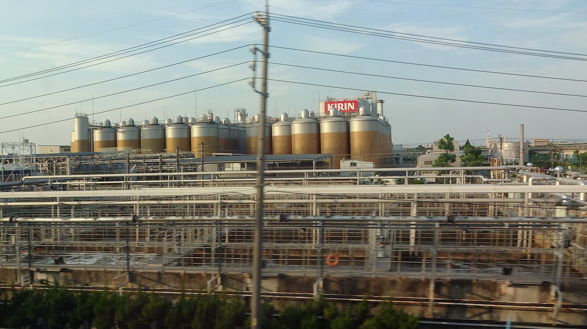

TOKAIDO SHINKANSEN WINDOW VIEW
キリンビール工場は新幹線から見える？
巨大な生ビールが、ずらり。

- 見える区間
- 名古屋 → 岐阜羽島
- 座席側
- E席・山側
- タイミング
- 東京発のぞみ基準で約98分後
- 写真
- 3枚
キリンビール工場の見つけ方
名古屋を出て庄内川を渡り、枇杷島駅の横を過ぎるころ、E席側にキリンビール名古屋工場の貯蔵タンクが見えてきます。遠目には、巨大な生ビールがずらりと並んでいるよう。線路沿いの産業風景なのに、見つけると少し楽しくなる珍景です。
東京から新大阪方面へ向かう場合は、名古屋 → 岐阜羽島が近づいたらE席・山側の窓を少し早めに見てください。新大阪から東京方面へ向かう場合は、通過順が逆になります。
東海道新幹線の車窓としてのポイント
キリンビール工場は、富士山だけではない東海道新幹線の車窓を楽しむための見どころです。列車の速度が速いため、見える時間は短く、天気や座席位置によって見え方が変わります。
参考リンク
English: Kirin Beer Factory is a Tokaido Shinkansen window view around Nagoya → Gifu-Hashima. After leaving Nagoya, crossing the Shonai River and passing Biwajima, the Kirin Beer Nagoya Factory appears on the Seat E side. Its storage tanks look like rows of giant draft beers from the train window: an industrial scene that somehow turns into a playful discovery.